Gallery
 June 24–25, 2026
Esper AI Hackathon
Open album · 4 picturesClose album
June 24–25, 2026
Esper AI Hackathon
Open album · 4 picturesClose album


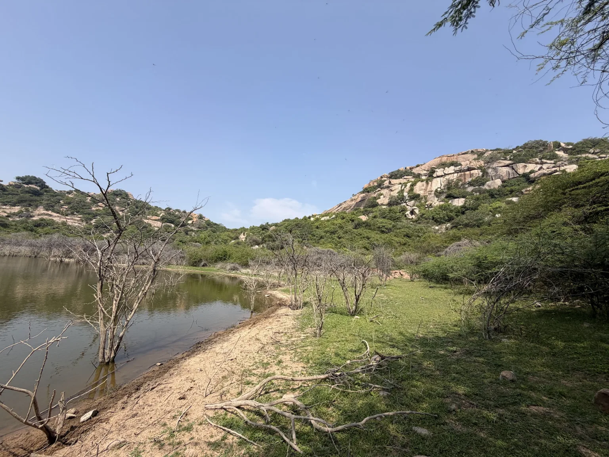
October 3, 2026
Penukonda
Open album · 10 picturesClose album


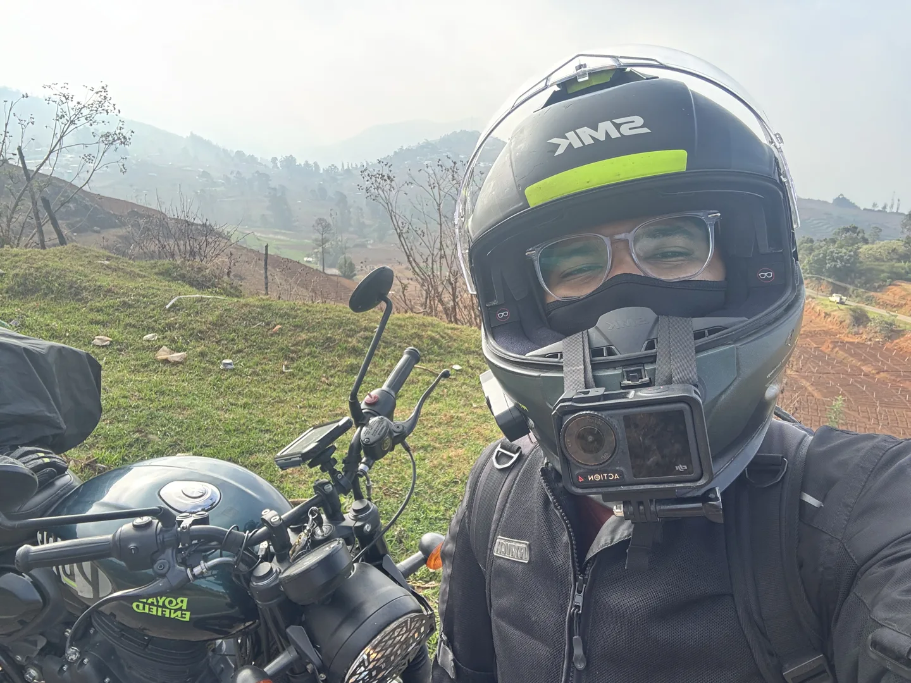
May 15, 2026
Ooty
Open album · 3 picturesClose album


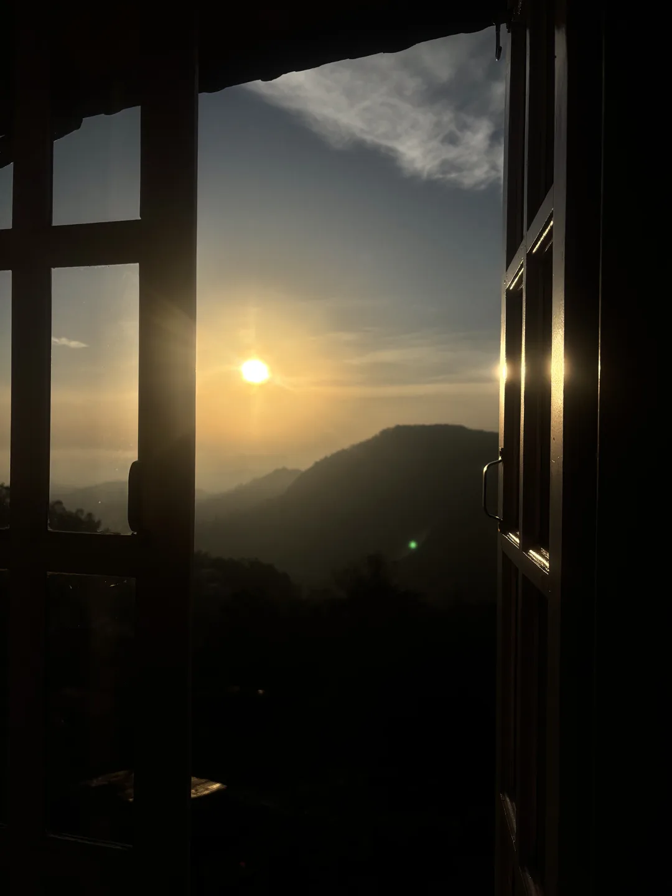

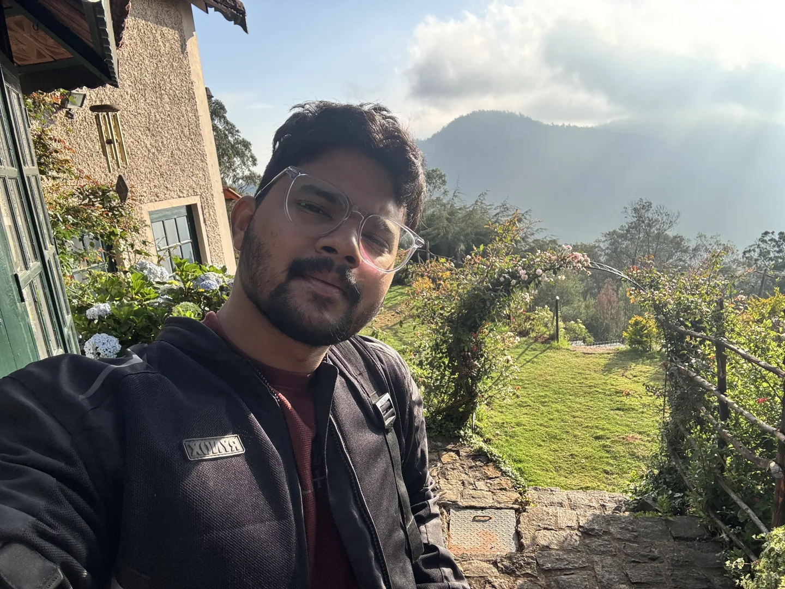
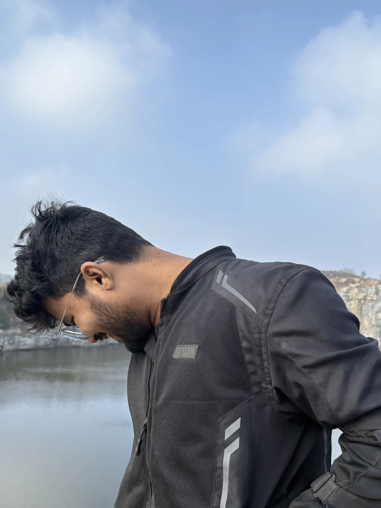
February 1, 2026
Kolar
Open album · 3 picturesClose album


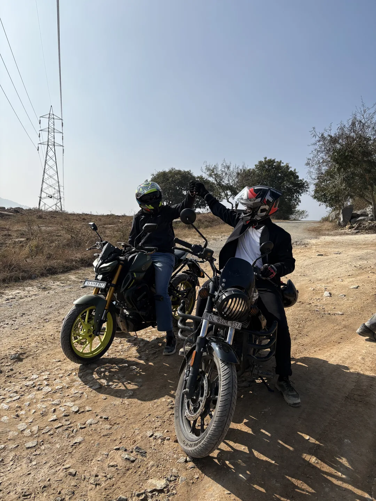

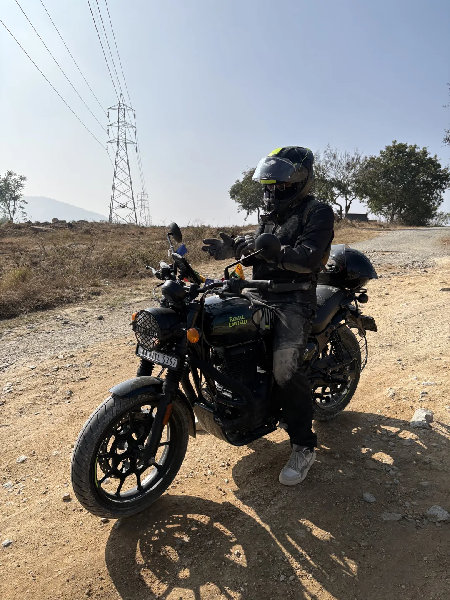
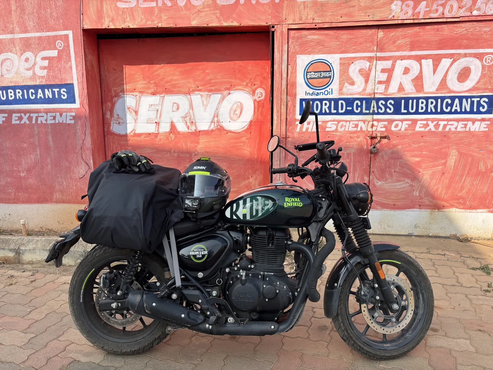
December 25, 2025
Bangalore to Mumbai
Open album · 2 picturesClose album


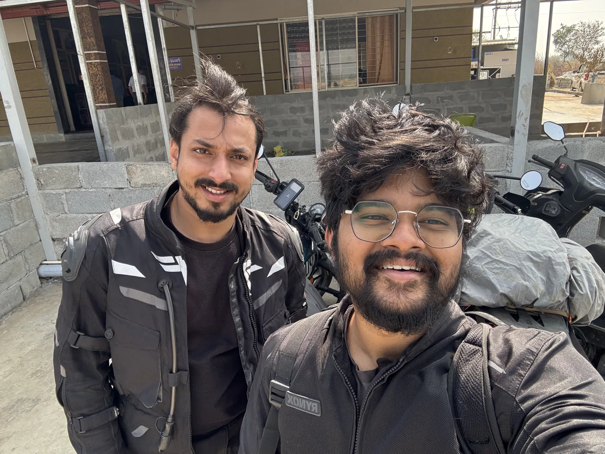
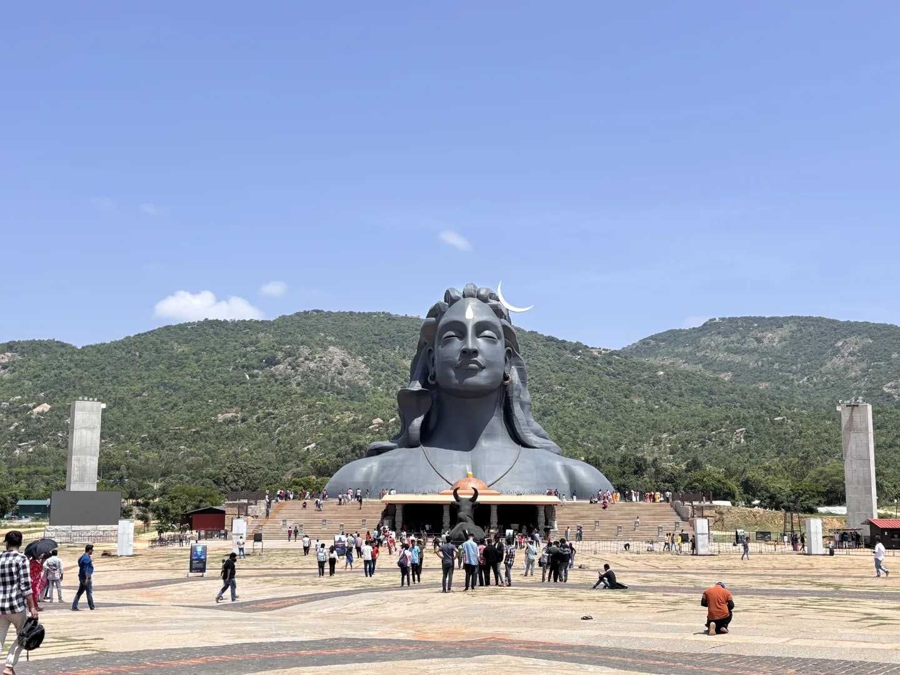
June 7, 2025
Nandi Hills & Adiyogi
Open album · 3 picturesClose album


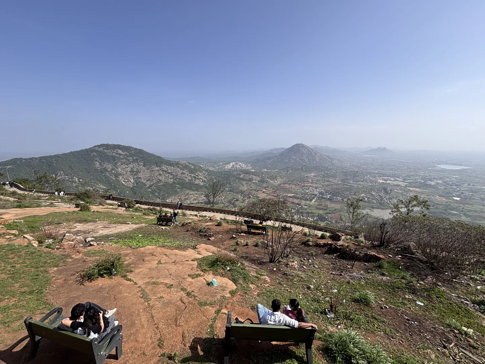

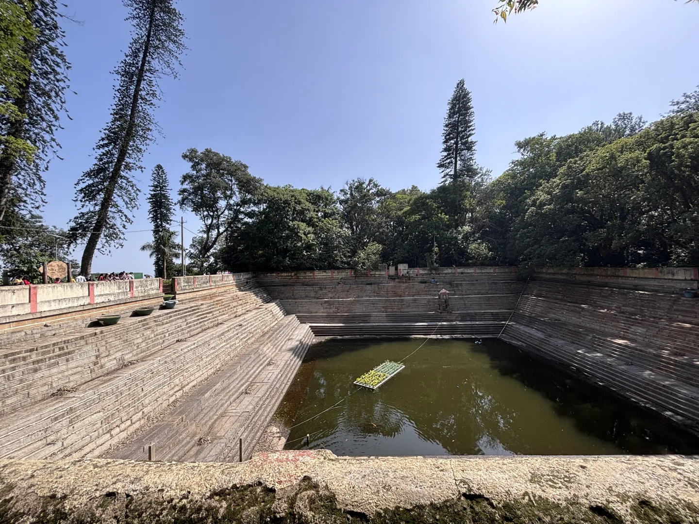